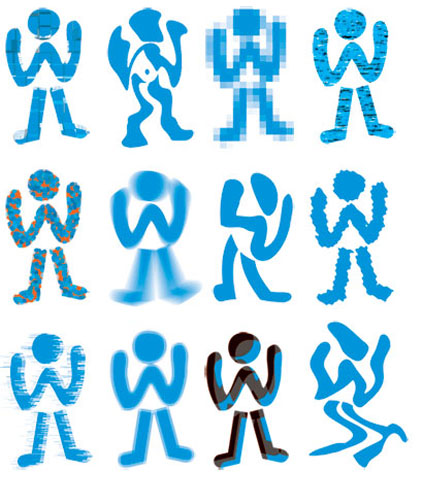

X
Wintriss Technical Schools would like to acknowledge the generous contributions of the following individuals and organizations:Dr. Bob Shillman
Rocco Fabiano
Victor E. Clarke
Gables Engineering Corporation
The Blanchard Foundation
Vic and Diane Wintriss
Randy Moore
Dana Blankenship
To make a contribution to Wintriss Technical Schools, click here.

Wintriss Technical Schools (WTS) is unique in its mission of teaching computer programming skills to grade and middle school children, preparing them to fill the critical shortage of computer programmers expected within the next ten years. To maintain the U.S. position of scientific leadership, the children of today will need to know how to write- as well as use-the complex software of tomorrow. WTS trains its students in writing computer programs using the popular JAVA™ language and object-oriented programming techniques in a fun-filled environment.